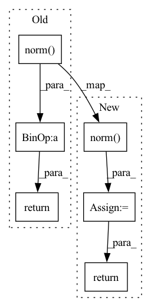

Pattern ID :5820

Before Change
@staticmethod
def projector(noise: torch.Tensor, pgd_eps: float, norm: Union[float, int, str] = float("inf")) -> torch.Tensor:
length = pgd_eps / noise.norm(p=norm)
if length < 1:
if norm == float("inf"):
noise = noise.clamp(min=-pgd_eps, max=pgd_eps)
else:
noise = length * noise
return noise
// -------------------------- Calculate Gradient ------------------------ //
def calc_grad(self, f, X: torch.Tensor) -> torch.Tensor:
After Change
if norm == float("inf"):
noise = noise.clamp(min=-pgd_eps, max=pgd_eps)
elif isinstance(pgd_eps, float):
norm: torch.Tensor = noise.flatten(-3).norm(p=norm, dim=-1)
length = pgd_eps / norm.unsqueeze(-1).unsqueeze(-1)
noise = length * noise
else:
norm = noise.flatten(-2).norm(p=norm, dim=-1)
length = pgd_eps / norm.unsqueeze(-1).unsqueeze(-1)
noise = length * noise
return noise.detach()
// -------------------------- Calculate Gradient ------------------------ //
def calc_grad(self, f, X: torch.Tensor) -> torch.Tensor:
In pattern: SUPERPATTERN
Frequency: 3
Non-data size: 6
Instances
Fragment ID: 20518107
Project Name: ain-soph/trojanzoo
Commit Name: 6196f5a49a32415dd69353946703a3878bc375ad
Time: 2021-07-19
Author: ain-soph@live.com
File Name: trojanvision/optim/pgd.py
M Class Name: PGD
N Class Name: PGD
M Method Name: projector(3)
N Method Name: projector(3)
M Parent Class: trojanzoo.optim.Optimizer
N Parent Class: trojanzoo.optim.Optimizer
M File Name: trojanvision/optim/pgd.py
N File Name: trojanvision/optim/pgd.py
M Start Line: 121
M End Line: 128
N Start Line: 160
N End Line: 172
'>
Before Change
U_t, _, _ = torch.svd(f_t.t())
P_s, cosine, P_t = torch.svd(torch.mm(U_s.t(), U_t))
sine = torch.sqrt(1 - torch.pow(cosine, 2))
return torch.norm(sine, 1) + self.trade_off * torch.norm(torch.abs(P_s) - torch.abs(P_t), 2)
After Change
P_s, cosine, P_t = torch.svd(torch.mm(U_s.t(), U_t))
sine = torch.sqrt(1 - torch.pow(cosine, 2))
rsd = torch.norm(sine, 1) // Representation Subspace Distance
bmp = torch.norm(torch.abs(P_s) - torch.abs(P_t), 2) // Base Mismatch Penalization
return rsd + self.trade_off * bmp
'>
Fragment ID: 20518111
Project Name: thuml/transfer-learning-library
Commit Name: 979fd077896648e2fac862c8a56ae6a03e126392
Time: 2021-08-11
Author: 13126830206@163.com
File Name: dalib/adaptation/rsd.py
M Class Name: RepresentationSubspaceDistance
N Class Name: RepresentationSubspaceDistance
M Method Name: forward(3)
N Method Name: forward(3)
M Parent Class: nn.Module
N Parent Class: nn.Module
M File Name: dalib/adaptation/rsd.py
N File Name: dalib/adaptation/rsd.py
M Start Line: 14
M End Line: 15
N Start Line: 26
N End Line: 29
'>
Before Change
grad, = torch.autograd.grad(func_val, inputs,
torch.ones_like(func_val, device = func_val.device), retain_graph = True
)
return grad / grad.norm(dim = -1, keepdim = True)
class WeightedNormalLoss(nn.Module):
def __init__(self, size_average = False):
super().__init__()
After Change
grad, = torch.autograd.grad(func_val, inputs,
torch.ones_like(func_val, device = func_val.device), retain_graph = True
)
grad_norm = grad.norm(dim = -1, keepdim = True)
return grad / torch.maximum(torch.full_like(grad_norm, 1e-5), grad_norm)
class WeightedNormalLoss(nn.Module):
def __init__(self, size_average = False):
'>
Fragment ID: 20518115
Project Name: enigmatisms/nerf
Commit Name: 1c535492f89dccb483aa8810106733d2d6a9a52b
Time: 2022-10-06
Author: 984041003@qq.com
File Name: py/ref_model.py
M Class Name: RefNeRF
N Class Name: RefNeRF
M Method Name: get_grad(2)
N Method Name: get_grad(2)
M Parent Class: NeRF
N Parent Class: NeRF
M File Name: py/ref_model.py
N File Name: py/ref_model.py
M Start Line: 124
M End Line: 124
N Start Line: 124
N End Line: 125